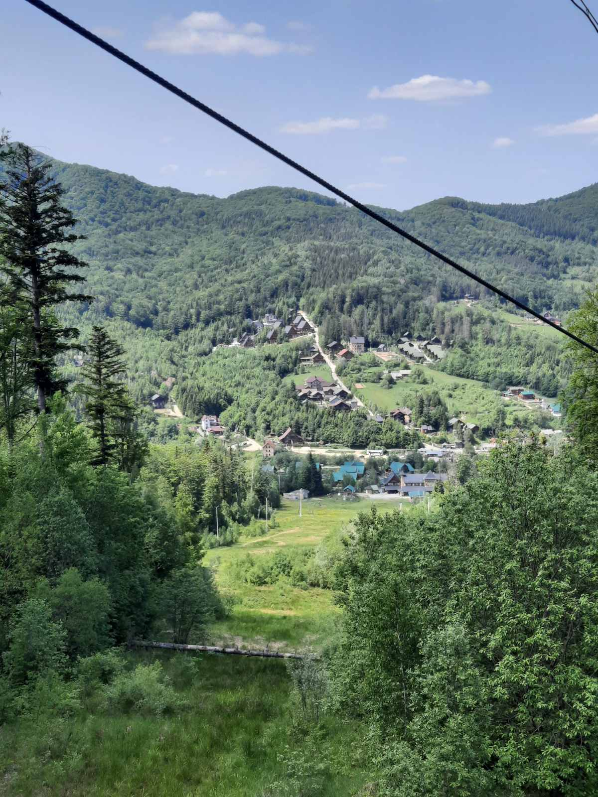
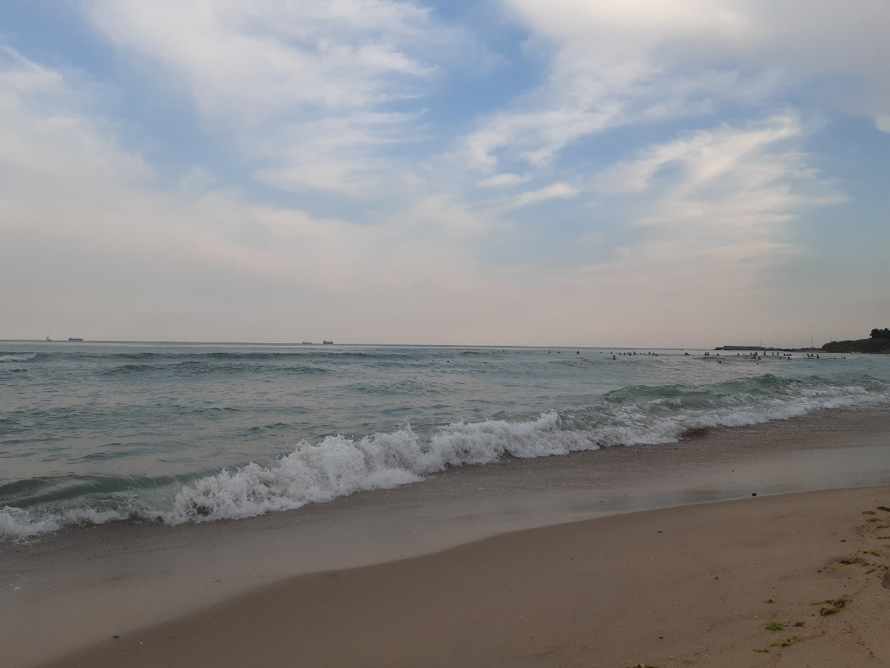

Україна – туристична перлина Європи? Чому кожному варто хоча б раз у житті приїхати сюди
- Море, гори, Україна: все для туристичного щастя - в одній країні
- Історія, культура, архітектура: пишатись є чим!
- Україна - природний клондайк Європи!
Україна - велика, простора, незламна, гарна і просто най-най-най країна у самому серці Європи. Відома своїм історичним спадком і історією, яка твориться на очах; неперевершеними природними ландшафтами та унікальними туристичними можливостями, які не надасть жодна інша країна. В умовах війни ця країна стає цікавою ще більшій кількості мандрівників, які прагнуть відчути у подорожах щось дійсне нове, справжнє, важливе і таке душевне. Дізнайтеся, чому Україна має всі шанси стати туристичним лідером Європи та чому її варто відвідати просто зараз
Природні ландшафти та неймовірна природа, історія та архітектура, контрасти та туристичні можливості - все це про Україну. Країну, яка пропонує будь-якому гостю унікальний досвід, але й досі залишається маловідомою для багатьох європейських мандрівників. Від могутніх Карпатських гір до затишного узбережжя Чорного моря, від древніх соборів і фортець до сучасних мегаполісів, від колоритних туристичних сел до найвіддаленіших лісів Полісся. Розповідаємо про туристичну Україну.
Море, гори, Україна: все для туристичного щастя - в одній країні
Серед туристичних козирів України – її природні багатства, про які можна писати нескінченно. Чого тільки вартують Карпати та Чорне море – споконвічні перлини туризму в Україні?
Карпати - величні, мальовничі гори, з розвинутою туристичної інфраструктурою. Підходять для туризму у будь-яку пору року. Влітку тут можна здійснювати пішохідні прогулянки, їздити на велосипеді та підкорювати відомі гірські вершини, восени - насолодитися помірним походами та збором грибів, взимку – кататися на лижах та сноуборді у кращих традиціях гірськолижних курортів.
За статистичними даними, більшість туристів в Україні, як іноземців, так і самих українців, обирають для відпочинку та відпусток саме Карпати. Готельний ринок Карпатського регіону наразі складається орієнтовно з 8400+ номерів, але кількість готелів та баз відпочинку тут постійно зростає, задовольняючи потреби туристів у повному обсягу. Такі відомі українські гірськолижні курорти, як Буковель, Яремче, Ворохта, Косів , Вигода, Ясіня, Верховина тощо пропонують варіанти відпочинку від 700 грн за ніч, що робить туризм у Карпатах доступним. Ну а про цікавість та насиченість відпочинку у Карпатах годі й говорити. Звідси всі повертаються з новими враженнями та відновленими силами.
Тренд гірського туризму сьогодні підхвачує і молодь, і пенсіонери, і сім'ї з дітьми. І якщо відпочиваючи, Ви хочете сховатися від натовпу та курортної метушні, увімкнувши режим “природи” - Карпати чекають на Вас у будь яку пору року.
Чорне море - ще одне дивовижне природне надбання України. Курорти Чорного моря в Україні відомі на весь світ ще з незапамятливих часів, але сьогодні, під час російської окупації Криму та Азовського узбережжя, кількість доступних та безпечних морських пляжів значно скоротилася. Ні, це не значить, що відпочинок на морі в Україні більше неможливий, проте обрати пляж для відпочинку тепер дещо складніше. Більше всього пропозицій відпочинку на морі в Україні пропонує Одеса та Одеська область. Сьогодні цей регіон пропонує 20 відкритих пляжів, де можна відпочити під південним сонцем не гірше, ніж на дорогих європейських морських курортах.
Далеко не кожна країна Європи, та й світу, може похвалитися таким поєднанням моря та гір, і це робить Україну особливо привабливою для туристів, які прагнуть відчути контрастність природних ландшафтів.
Історія, культура, архітектура: пишатись є чим!
Історична складова території України проявляється в її численних старовинних містах та архітектурних пам'ятках різних епох. На відміну від багатьох молодих держав, які лише розпочинають свою історію, Україна має багатовікову спадщину, яка сягає часів скіфів, Київської Русі, українського козацтва тощо. Відвідавши такі українські міста, як Київ, Львів чи Одесу, можна поринути у світ старовинних замків, соборів та фортець, та, завдяки екскурсіям з професійними гідами, дізнатися про Україну щось цікаве і незвичайне.
Яскравим прикладом історичного туризму в Україні є відвідування туристами Софійського собору у Києві, збудованого ще у ХІ столітті. Стосується це і відомої Львівської площі Ринок, кожна будівля навколо якої має свою унікальну історію довжиною в століття. За словами багатьох іноземних туристів, які відвідують Україну навіть під час війни, саме історична спадщина країни стала головним мотивом для їхньої подорожі. Наприклад, одна австралійська туристка під час війни наважилася приїхати до України, та ще й здалеку, спеціально, щоб побачити на власні очі саме старовинну архітектуру та багату історію України, якої немає в її рідній Австралії.
Україна - природний клондайк Європи!
Та не архітектурними пам'ятками єдиними. Окрім архітектурних багатств, Україна може похвалитися і великою кількістю природних пам’яток, які не мають аналогів у світі. Наприклад, біосферний заповідник "Асканія-Нова" – унікальний куточок природи, де збережено рідкісні види тварин та рослин. Тут можна побачити рідкісних диких коней Пржевальського, європейських бізонів та багато інших представників фауни. Також в Україні працює багато ботанічних садів, які дарують туристам незабутні враження від різноманіття флори.
Дністровський каньйон – одне з найбільших природних утворень Європи, визнаний одним із семи природних чудес України. Величні та мальовничі скелі Дністровського каньйону, його водоспади, залишають враження у кожного, хто наважиться здійснити подорож у цей край.
А як щодо карпатських озер та цілющих джерел? Кришталево чисті, в компанії гірських масивів та лісових насаджень, озера та цілющі джерела в Карпатах є унікальними місцями для “релаксу” душі і тіла. Тут і містика, і натхнення, і унікальні ландшафти, які не передасть жодне фото. Особливо люблять туристи відвідувати легендарне озеро Синевир - давнє, таємниче, з незайманою карпатською природою навколо.
Посилання на джерело інформації